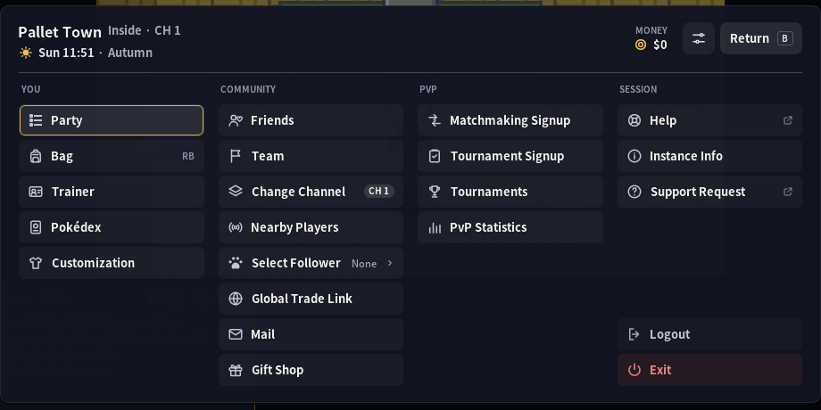

The game's own controller support
Your binds go straight into PokeMMO's settings. Nothing sits between your controller and the game.
Free · open source · v1.1.0
Every action in the game on your controller: battles, hotbar, Bag, GTL, Pokédex. Uses PokeMMO's own controller support, installs with one command, and stays out of your way.
Button map
Point at a button to see what it does. Pick your controller and the names change to match it.
Right stick
Tilt the right stick and a wheel opens in the middle of the screen. Point at a slice, let go, done. Let go in the centre to cancel. It sizes itself to your screen, from a 720p handheld to 4K.
The wheel uses Steam's controller support. No Steam? You still get every other button.
Why it feels native
Your binds go straight into PokeMMO's settings. Nothing sits between your controller and the game.
One input does one thing. No turbo, no macros, no sequences, and the tool refuses any layout that tries.
Pick your controller, change any button, watch the map update, press Apply. Runs on your computer only.
Run the same command to update. Uninstall puts every file back exactly as it was.
Windows, the macOS app, the Linux zip, Flatpak and Snap. No settings to hunt for, no admin rights.
Slots 1–5 on the D-pad and LB, 6–9 on the wheel, plus the Focus Ring to reach any item.


Install
Close PokeMMO, leave Steam open, then paste the line for your system. Nothing to install first.
1 Paste this line for your system.
irm https://raw.githubusercontent.com/jordanallenlewis/pokemmo-controller/main/install.ps1 | iexPress Win, type PowerShell, open it, paste, press Enter.
curl -fsSL https://raw.githubusercontent.com/jordanallenlewis/pokemmo-controller/main/install.sh | shPress ⌘ Space, type Terminal, paste, press Return. Don't use sudo.
curl -fsSL https://raw.githubusercontent.com/jordanallenlewis/pokemmo-controller/main/install.sh | shOn Steam Deck, switch to Desktop Mode and open Konsole. Don't use sudo.
Prefer to read the script first? install.sh · install.ps1 · Uninstall
FAQ
PokeMMO lets you remap your controls as long as one input from you produces no more than one input to the game. This layout is built around that rule: every button and every wheel slice does exactly one thing, and the tool refuses any layout with a repeat, a sequence or a delay. It is a fan project and not made or endorsed by the PokeMMO team.
Xbox (One, Series, 360, Elite, Adaptive), PlayStation (DualShock 4, DualSense, Edge), Switch Pro, Steam Deck and Legion Go. Most other gamepads that show up as one of these work too.
Only for the right-stick wheel. Without Steam you still get every other button through the game's own controller support.
Yes. The remap screen opens in your browser, lets you pick the input for every action and move the wheel slices, and checks that each input still does just one thing.
Close other controller tools (DS4Windows, reWASD and similar), then run the install line again. Still stuck? Open an issue and say which system and controller you use.
One line, listed in the README. It restores PokeMMO's and Steam's settings exactly as they were.
Free forever. If it makes the game better for you, a star on GitHub helps other players find it.